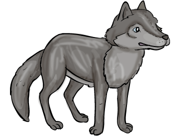

A mac-kó kuc-kó-ja
Mackó: Jó vé-dő kuc-kót é-pí-tet-tem. Jön a tél, nem á-zom-fá-zom.
Cinke: Ki-é ez a vé-dő kuc-kó? Méz Za-zá-é, a mac-kó-é? De jó len-ne itt lak-nom ne-kem is!
Mackó: Tes-sék, tes-sék! Itt jó lak-ni!
Őzike: Ni-ni! Kuc-kó! Ki la-kik itt?
Mackó: Én, Za-za, és Ce-cí-li-a, a cin-ke.
Cinke: Köl-tözz i-de te is!
Őzike: Jaj, de jó! Nem kell fél-nem a tél-től!
 : Mi van itt? Lik-luk? Kit lá-tok?
Mackó: Za-za, en-nek a lak-nak a tu-laj-do-no-sa.
Cinke: És Ce-cí-li-a, a má-sik la-kó.
: Méz Za-za, te kó-cos ál-lat! Ne féltsd a la-ká-sod! Én is itt te-lel-nék.
Őzike: A kuc-kó te-le van!
: Ked-ves len-nék ve-le-tek.
Mackó: Nem ne-ked é-pí-tet-tem a kuc-kót! A kis ál-la-to-kat vé-dem. Ku-tass más kuc-kó után!